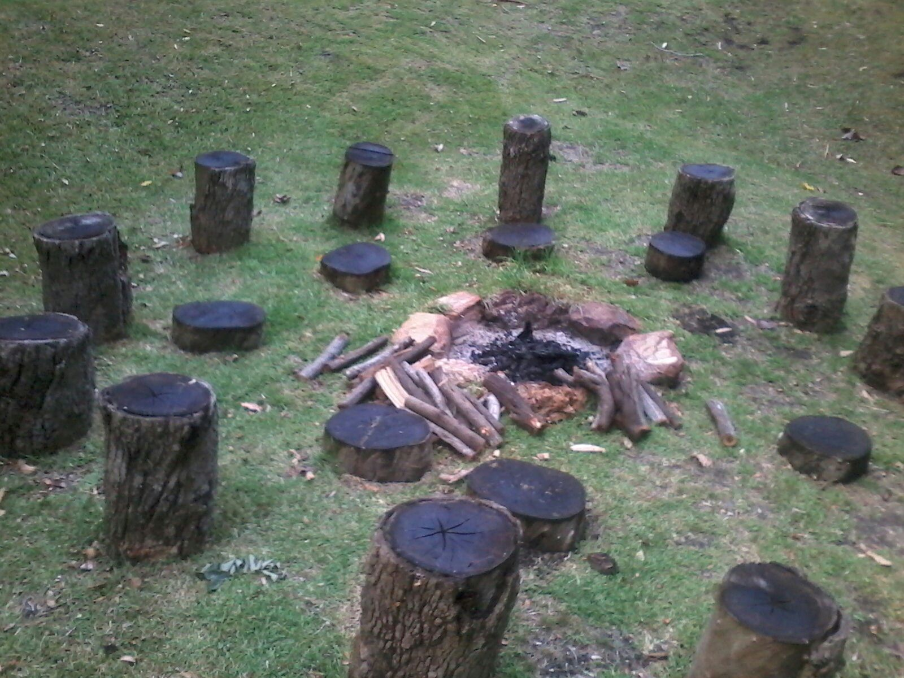
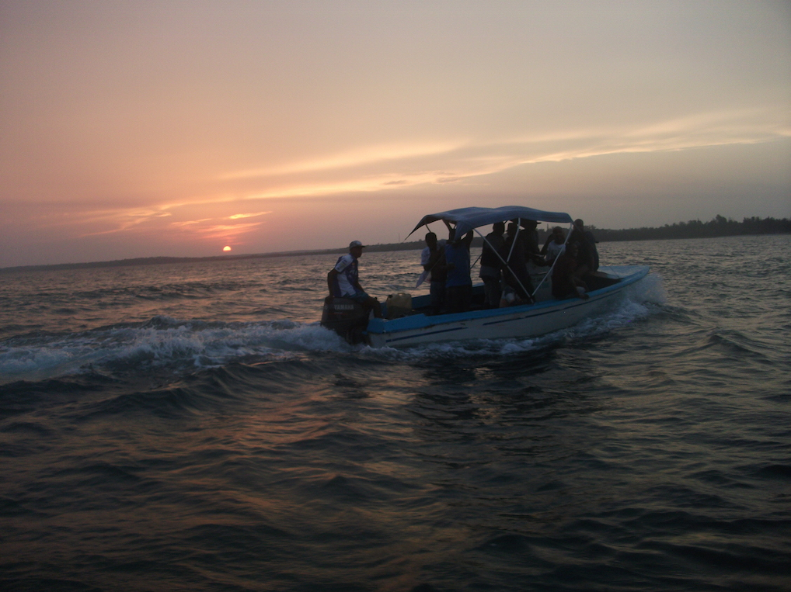
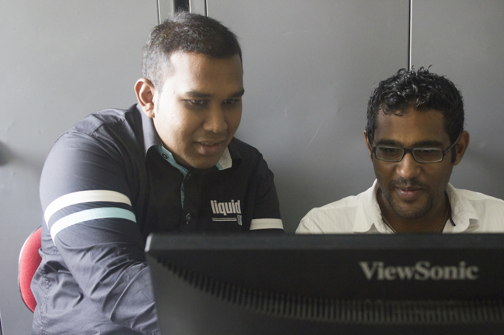

Africa
South Africa

- SKA SA 2015 Conference
I have spent roughly one and a half year in Cape Town. I have had the opportunity to attend various conferences and workshops where I have met amazing people. The cool thing is that I got to learn about several cultures and traditions.
The SKA SA (Square Kilometre Array South Africa) conference is held every year. Students, funded by the SKA SA bursaries attend the conference and share their research. Some of them give talks while there are also poster sessions.
Briefly, the SKA (Square Kilometre Array) is going to be the world's largest radio telescope to be built on Earth and will be located on the African continent. The major reason for gathering students from Africa is to promote Human Capital Development throughout the continent.
- 
- Bodhi Khaya
Another great experience which I had, was when I went to Bodhi Khaya for a week or so. One night, we all sat around the fire, telling our stories about how we got here. At that point, I realised how hard life can be in the past for everyone. It's never easy. Everyone had their own story but one thing I concluded was that motivation and willpower kept everyone moving forward in life.
In particular, we organised a JEDI on Machine Learning there but people were also free to continue their own research. One interesting idea was to generate Music from a Deep Neural Network architecture. We did not achieve much but one year later or so, Google released WaveNet, which also uses Deep Learning methods to generate music. On the other hand, we had Professor Andrew Jaffe visiting from Imperial College London and we started another BIRO (Bayesian Inference for Radio Observation) project, the idea being to use visibilities to predict the likely distance between two point sources which are buried in noise.
Mozambique
- 
- Mozambique
In September 2016, we organised a JEDI in Mozambique for a week. I must say, I was particularly reluctant to go when I learnt that I had to take all the needful precautions (Malaria Tablets and Yellow Fever Vaccination) before entering the country. When I heard that it was going to be the first time ever that such an event would be organised in Mozambique, I did choose to go in the end. It was a difficult experience for me in the sense that 9 out of the 10 partipants spoke Portuguese. However, they all tried to speak in English. We had this session where one should speak to three people he/she had never met before in roughly 15 minutes. In that short activity, I met a young man who tried to explain in English, that Steve Jobs is his reference point, and this keeps him moving forward in life. I was amazed when he told me his story. Overall, the participants were able to learn more about the universe by attempting to reproduce the 2011 Nobel Prize in Physics.
Mauritius

- Mauritius JEDI 2015: Image taken from the top of Villasun at sunset.
The Mauritius Machine Learning JEDI was organised from the 16th to the 26th July 2015 and was held at VILLASUN thanks to the generous funding from SKA SA and the Newton Fund. We had the opportunity to work with various experts, namely, Dr Jasper Horrell (Science Processing Manager at SKA SA), Dr Sudeep Das (Senior Researcher at Netflix, previously data scientist at OpenTable) and other researchers as well.
The participants (mostly undergraduate students enrolled in Science and Engineering Department at the University of Mauritius) attempted to solve two problems which were both on imaging. The first one a radio astronomy problem, for which the goal was to find the number of point sources and extended sources in a sky image. The idea proposed was to have a friends-of-friends (FoF) kind of algorithm to do so. On the other hand, some participants worked on Diabetic Retinopathy Detection, which was in fact a Kaggle problem.
- 
- Astro Data Science miniJEDI: Myself on the left and David on the right. David was doing his final year project at that time.
Many Mauritians are currently studying in South Africa, thanks to the generous financial support from SKA SA and various funding agencies. Every year, when we get back to Mauritius, we organise a kind of mini-workshop where we share our knowledge with other Mauritian students. As an example, we organised an Astro Data Science miniJEDI from the 4th to the 8th January 2016, in which I was part of the organising committee.
For the first few days, we taught some basic Python programming. I talked about Presentation Skills (the idea being from the book "Presentation Secrets of Steve Jobs") and I also gave a talk on Introduction to Bayesian Statistics. For the last two days of this workshop, the participants worked on Data Analysis and Exoplanet Detection, which gave them hands-on experience with coding.